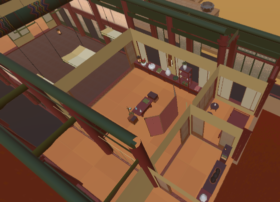
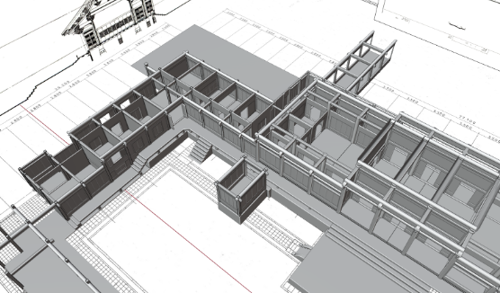
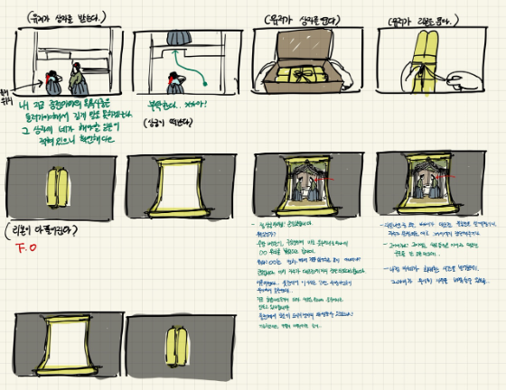
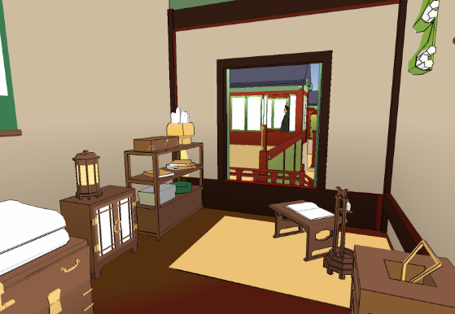

How can we make history games appeal to non-traditional audiences? History as a genre of gaming is in many ways quite set in how it is portrayed. Male-dominated, violent, drab in its aesthetics, or concerned with minutiae of equipment specifications far more than how people in the past actually lived. Having found a niche in boys and young men, by and large history games seem to have no interest in capturing the attention of anyone else. History as a discipline, by contrast, should have appeal to all of us. It offers us a glimpse at the unparalleled depth and broadness of human taste, of stories accumulated through the collective experience of millions. That interactive media so often captures only a sliver of this is a great shame, to say the least, and something we hope to play a part in redressing.
Our approach to this has been threefold: a different kind of subject, a more accessible control scheme, and a different audience. In telling the story of Korean palace servant women, we hope to shed light on a subject whose lives were no less meaningful than the more commonly told stories of those they served. While to seasoned gamers, calling a virtual reality game more accessible than more traditional control schemes might sound backwards, to those new to gaming, its physical movement-based controllers offer a less intrusive disconnect from reality. Finally, but most importantly, we wanted to appeal to an audience that was explicitly not the traditional one for history games (i.e. boys and young men). History is the story of all of our pasts, not only the past of men, in spite of the monopolization of what got written down; there’s something in it for everyone to find appeal in, and we wanted to show that. Impetus
Games have an incredible potential as a means of education, at least in certain subjects. Throughout my game studies, I’ve been paying particular attention to the writers we’ve covered that have gone into this, like Ian Bogost’s concept of “Procedural Rhetoric,” and James Paul Gee’s Good Learning Principles in Video Games. For myself, I have an immense personal interest in history, and the fact that for so many it’s considered a deeply unappealing subject is something I’ve found unfortunate, and so the idea of a history game created as a means of learning – whether by sparking an interest, or including actively didactic elements – was something I had an interest in creating from the moment I started my studies. This project is, perhaps quite naturally, the end result of that; my attempt at helping to expose a period of history I love and think is deeply underserved, through a medium I believe very much has the power to do so. Audience
Our eventual goal with Neungsohwa VR is for this project to go beyond this class, and to publish it on an online store as a more finalized game with both Korean and English-language versions. We’d like it to appeal to everyone of course, and ideally in the West as well, but our core target audience for that stage is Korean women aged from around 15 to 35, who likely have only a cursory interest in history, but one that we’d be able to foster.
For the project as it is right now though, our more immediate concern is to apply for grants, and so that more particular target audience has dictated the state of the game as it is now, much more focused around a brief exhibition experience that can hopefully show off what we can create as a team, while leaving us lots of room to expand on our concept. Context
In addition to the research we conducted at museums (the National Palace Museum, National Folk Museum, and National Museum of Korea), trips to both Changdeokgung and Gyeongbokgung palaces in person, a number of readings we went through are included in the bibliography. Aside from explicit historical research, we looked a great deal at existing Joseon-period history media. Korean historical dramas featuring the life of the royals in the palace are extensive, while ones that cover more lowly figures like gungnyeo are rarer, and their tendency (albeit not universal) to portray these lowly figures as foolish comic relief to the lead (noble) character was one of our motivations for focusing our game on servants. As it so happened though, in the middle of production, one of the biggest historical dramas in a number of years – The Red Sleeve Cuff – came out, centering nearly entirely on the lives of gungnyeo in exactly the nuanced manner we felt was sorely lacking. It’s ended up becoming a major reference for us in terms of depiction.
Methodology + Prototyping
Queen’s Chamber Prototype
Created over the course of Thesis I, this game’s first major prototype was centered solely around the queen’s chambers, with minimal functional gameplay. It was more a test of how our workflow might look, and the kinds of things that could be created within certain time constraints. There was an emphasis on taking visuals and interactivity to a developed level – not at all in the same way as the final product would look (and in fact, everything was built over from scratch, and on a different platform entirely), but rather in how long it might take to create an asset, so we could get a sense of how much we might be able to bite off with our final product.

Gameplay from the first prototype.
In addition to that, we also created the space and furnishings from historical references, so we could get a better sense of how the space might look, as well as to trial certain things we were unsure about like user locomotion.
The palace environment of the first prototype.
Interaction Prototype
We built the first prototype using Oculus’ own VR plugin for Unity (OVR), but running into some issues with it, as well as realizing we wanted to potentially open the game up to other platforms, made us realize the worth in starting over from scratch for the start of Thesis II using Unity’s own VR package, XR Interaction Toolkit instead.
This was also the point in the project where the other team members, Dabin Lee and Hyejin Jang, joined Xander Thornborough to create the game as a group project, and so our interaction prototype was a test both of getting interaction working with the new VR package, as well as how our workflow might work as a team.

An interaction test.
We also created the palace environment again from scratch, having learned from the initial prototype a workflow for the buildings that would allow us to add to them better later down the line, and creating a much wider environment, and allowing us to start considering and testing the user flow better around the space.
The new, more expansive palace environment.
Narrative Storyboard
After blocking out the space and experimenting with a few layouts, we started to better envisage the flow of the story for this section. Unfortunately, this more explicit narrative element had to be cut for what we’re showing during this thesis exhibition, but our hope is to reimplement it in future versions.
A storyboard for the as-yet unimplemented narrative.
Thesis II Prototype
Perhaps I shouldn’t be calling this a prototype, but it’s how we’ve been conceiving of it as a team, since we all want to keep working on this even after the thesis exhibition. For this final prototype for this class, we’ve placed an emphasis on a realized layout, audio design (including a composer we hired for music), interaction, and semi-finalized aesthetics like shaders. We wanted to take the game to a point where an English-speaking ‘exhibitee’ can explore the palace, and uncover information about the historical environment and objects around them, and in general create a foundation we might be able to start marketing for more funding.
An interior of the version of the game for the thesis exhibition.
Addendum: Research
As a historically rooted game, doing justice to our subjects was an utmost priority, and so especially at the outset, a lot of research went into what we created. See the bibliography for a sample of the works that were read. We also went on a number of trips to museums, including Korea’s National Palace Museum, as well as several visits to the palaces themselves in person.
As the project went on and we became busier and more entrenched in what we were making, keeping up with the background readings for the project did end up falling down the list of tasks and not getting enough attention, much to my shame. Going forward for this project and ones like it, organizing time to keep the research as a continuous priority is something I’d like to do.
Self-Evaluation
It’s always hard to evaluate yourself, and I feel like for a project like this – the culmination of all of my studies – it’s harder than ever. I’ve been anticipating and creating expectations around this project since my sophomore year, and yet now that the time actually came, other priorities (most of which I should really have better anticipated) came up and meant I couldn’t designate as much time as I was initially hoping to. The professors of course warned about this at the start of the semester, a warning that I didn’t heed at the time. Yet at the same time, I’m not unhappy with how the work has turned out, even if it hasn’t yet met my unmeetable expectations. I think we’ve created something that’s already special in a particular way, and to my mind largely succeeds in shining light on a different aspect of history in a way different to most history games. We as a team are explicitly planning on taking the project further at least over this summer, and depending on where it goes perhaps beyond that. I think as a foundation for that, what we have has worked.
Glossary
- Changdeokgung Palace: The palace Neungsohwa VR takes place in. Originally only a secondary palace and today the less famous of the two, Gyeongbokgung’s devastation meant Changdeokgung was the royal family’s primary residence for most of the Joseon dynasty, and its grounds grew to be far grander.
- Gungnyeo: An abbreviation of “lady officer of the royal court,” but often used as a catch-all term for any servant women that worked in the Joseon palaces in support of the royal household. Their lives, education, and positions varied widely, but all lived at the mercy of the royals.
- Gyeongbokgung Palace: Officially the primary royal palace of the Joseon dynasty, devastation in war meant it had been disused for centuries by the time of our game. It would be rebuilt in the mid 19th century.
- Joseon Dynasty: The last royal dynasty of Korea, lasting from 1392 to around 1905.
- Late Joseon: Since the Joseon dynasty covers a lengthy period with marked differences throughout, historians often split it up. For our project, we refer to “Late Joseon,” covering the period from 1598—1905. Neungsohwa VR takes place somewhere around 1800.
- Neungsohwa (능소화): The Korean term for the flower campsis grandiflora, native to East Asia. A creeping flower that grows along walls, in Joseon this fixing to a single place came to symbolize gungnyeo, trapped within the courtyards of the palace. Our game aims to elevate them over these courtyard walls.
Bibliography
Game-making and Theory
Adams, Tarn, and Tanya Short. Procedural Generation in Game Design. Taylor & Francis Ltd, 2017.
Bogost, Ian. Persuasive Games. Cambridge, MA: MIT Press Ltd, 2010.
Gee, James Paul. What Video Games Have to Teach Us about Learning and Literacy. New York: Palgrave Macmillan, 2008.
Laurel, Brenda. Computers as Theatre. Upper Saddle River, NJ: Addison-Wesley, 2014.
Nystrom, Robert. Game Programming Patterns. Genever Benning, 2014.
History
Chang, Kyung-Ho. “Palace.” Grove Dictionary of Art. New York: Oxford University Press, 2019, https://doi-org.libproxy.newschool.edu/10.1093/gao/9781884446054.article.T064732.
Chang, Kyung-Ho, Kim Dong Hyun, and Park Eon Kon. “Korea.” Grove Dictionary of Art. New York: Oxford University Press, 2003, https://doi-org.libproxy.newschool.edu/10.1093/gao/9781884446054.article.T047380.
Deuchler, Martina. Confucian Transformation of Korea. Cambridge: Harvard Ukrain. Res. Inst., 1995.
Fu, Xinian. Traditional Chinese Architecture: Twelve Essays. Edited by Nancy Shatzman Steinhardt. Translated by Alexandra Harrer. Princeton, NJ: Princeton University Press, 2017.
Fung, Stanislaus. “Palace.” Grove Dictionary of Art. New York: Oxford University Press, 2019, https://doi-org.libproxy.newschool.edu/10.1093/gao/9781884446054.article.T064732.
Guo, Qinghua. “Yingzao Fashi: Twelfth-Century Chinese Building Manual.” Architectural History 41 (1998): 1–13.
Guo, Qinghua. “Timber Building Structures in Chosen Korea – A Case Study on Geunjeongjeon and Injeongjeon.” Journal of Architectural and Planning Research 22 (2005): 51–68.
Haboush, JaHyun Kim. Memoirs of Lady Hyegyong. University of California Press, 2013.
Hyun, Chang-ho. “Ancient Palaces in Seoul.” Korea Journal 3, no. 8 (August 1963): 8–23.
Jackson, Ben, and Robert Koehler. Korean Architecture: Breathing With Nature. Seoul Selection, 2012.
Kim, Jungwon. “‘You Must Avenge on My Behalf’: Widow Chastity and Honour in Nineteenth-Century Korea.” Gender & History 26, no. 1 (2014): 128–46.
Kim, Sung Woo. “The Beauty of Traditional Korean Architecture.” Korea Journal 47, no. 3 (2007): 35–75.
Kim, Youngmin, and Michael J. Pettid. Women and Confucianism in Chosŏn Korea: New Perspectives. Albany, NY: SUNY Press, 2012.
Lee, Kyu. “Aspects of Korean Architecture.” Art & Architecture Archive, August 1, 1968, 94–102.
Lovins, Christopher. King Chongjo, an Enlightened Despot in Early Modern Korea. State University of New York Press, 2019.
Park Hyeong-yoo. “Heritage, Tourism, and National Identity: An Ethnographic Study of Changdeokgung Palace.” Korea Journal 49, no. 4 (2009): 163–86.
Park, J. P., Burglind Jungmann, and Yi Chu-hyŏng. A Companion to Korean Art. Hoboken, NJ, USA: John Wiley & Sons, Inc, 2020.
Seth, Michael J. A History of Korea: From Antiquity to the Present. 1st ed. UK: Rowman et Littlefield, 2011.
Shin, Myong-ho. Joseon Royal Court Culture: Ceremonial and Daily Life. Korea: Dolbegae Publishers, 2004.
Steinhardt, Nancy Shatzman. Chinese Architecture: A History. Princeton University Press, 2019.
Yi, Hyang-woo. Korean Royal Palace Changdeokgung. Translated by Hyeon-suk Won. Paju-si, Korea: Inmunwalk, 2015.
Yi, Sŏng-mi. “Euigwe and the Documentation of Joseon Court Ritual Life.” Archives of Asian Art 58, no. 1 (2008): 113–33.